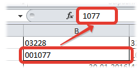
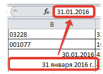
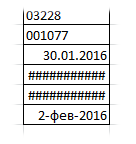

Tips_Macro_CellValToVisual.xls (48,5 KiB, 316 скачиваний)
Tips_Macro_CellValToVisual.xls (48,5 KiB, 316 скачиваний)Видимое значение ячейки в реальное
Часто из всем известной 1С отчеты выгружаются в Excel. Что не удивительно, ведь многие используют 1С как базу ведения всевозможных данных, а анализ предпочитают производить в Excel. И это удобно, это работает. Но часто при получении файла из 1С форматы ячеек изменены так, что отображается в ячейках одно значение, а на деле там значение совершенно иное:


Чтобы не возникло недопонимания, что это такое на картинках выше. Например, если в ячейку записать число 1077, то оно и отобразится так же. Однако его визуальное отображение в ячейках можно изменить: выделяем ячейку -правая кнопка мыши -Формат ячеек(Format Cells) -вкладка Число(Number). Далее в списке слева выбрать Дополнительный(Special) и установить Почтовый индекс. Тогда в ячейке визуально будет отображаться 001077, в то время как реально в ячейке будет оставаться все то же число 1077. Тоже и с датами. Реально в ячейке число, а визуально дата в одном из форматов из категории Дата. Подробнее про то, почему так происходит можно прочесть в статье: Как Excel воспринимает данные?
И как это всегда бывает - порой просто необходимо работать не с тем значением, которое реально в ячейке, а именно с теми, которые отображаются в ячейках. Яркий пример такой необходимости - это сцепление данных двух ячеек, в одной из которых записана дата. Например, в A1 записана дата "06.02.2016", а в B1 текст вроде "Отчет по магазину за " и необходимо сцепить текст из B1 с датой из A1. Если применить просто функцию СЦЕПИТЬ(CONCATENATE) или по простому =B1&A1, то результатом будет такой текст: Отчет по магазину за 42406.
Если формат лишь один - можно стандартно попробовать побороть при помощи функции ТЕКСТ(TEXT). Например, в ячейках столбца А записаны даты в формате 31 января 2016г. Тогда формулу можно записать так:
=ТЕКСТ(A2;"[$-F800]ДДДД, ММММ ДД, ГГГГ")
=TEXT(A2,"[$-F800]dddd, MMMM yy, yyyy")
На примере той же СЦЕПИТЬ(CONCATENATE):
=СЦЕПИТЬ(B1;ТЕКСТ(A1;"[$-F800]ДДДД, ММММ ДД, ГГГГ"))
=CONCATENATE(B1,TEXT(A2,"[$-F800]dddd, MMMM yy, yyyy"))
Но если форматы в ячейках различаются и записаны в разнобой...Стандартно этого никак не сделать, кроме как каждую ячейку руками перебивать. Но если прибегнуть к помощи Visual Basic for Applications(VBA), то можно написать простую функцию пользователя(Что такое функция пользователя(UDF)) и применить её:
Function VisualVal_Text(rc As Range) VisualVal_Text = rc.Text End Function
|
1 2 3 |
Для применения надо внимательно прочитать про создание функций пользователя. После этого в ячейку останется записать:
=VisualVal_Text(A1)
и раскопировать ячейку на весь столбец. После этого можно заменить результат функции значениями(Как удалить в ячейке формулу, оставив значения) и все готово. Но и в этой функции есть недостаток. Если в ячейке отображается значение, которое не помещается в границы ячейки, то оно может быть обрезано или вместо значения будут решетки. Например, если дата в указанном формате не помещается в ячейку - вместо значений будут решетки #######:

и функция VisualVal_Text вернет так же решетки. Это тоже решаемо. Можно либо перед применением расширить столбцы с исходными данными так, чтобы значение отображалось правильно и полностью, либо применить чуть другую функцию пользователя:
Function VisualVal(rc As Range) VisualVal = Application.Text(rc.Value, rc.NumberFormat) End Function
|
1 2 3 |
Function VisualVal(rc As Range) |
Используется и записывается в ячейку так же, как и предыдущая:
=VisualVal(A1)
Эта функция без всяких танцев с бубном вернет отображаемое форматом ячейки значение.
И вариант применения функции вместе с функцией СЦЕПИТЬ:
=СЦЕПИТЬ(B1;VisualVal_Text(A1))
=CONCATENATE(B1,VisualVal_Text(A1))
=СЦЕПИТЬ(B1;VisualVal(A1))
=CONCATENATE(B1,VisualVal(A1))
Как видно не надо задумываться о том какой применить формат - будет записано так же, как оно отображается в ячейке.
Все варианты решений можно посмотреть в примере:
Tips_Macro_CellValToVisual.xls (48,5 KiB, 316 скачиваний)